本文是对设计模式基本知识的总结，包括一些设计原则，模式的定义，类结构和示例
设计模式
总结
要想更好的复用，就要解决怎么把重复的代码和变化的代码分开，也就是怎么封装变化；设计模式是一些重复出现的问题的有效的经验，代价是增加复杂度；而且变化很难预期，最好只针对确定的预期变化做设计或针对变化进行重构
设计原则是合理的代码结构的普遍原则
模式使用指南
- 保持简单，能不用模式就不用模式，能用简单的方法解决问题就用简单方法，除非变化是可预期的需求.
- 使用模式要考虑模式带来的后果.
- 重构的时候，如果能用模式改善代码结构就用
- 在不需要模式带来灵活性的设计中应该大胆的去掉模式
设计原则
- 封装变化：找出应用中可能需要变化之处，把它 们独立出来，不要和那些不需要变化 的代码混在一起。
- 针对接口编程，而不是针对实现编程：客户就不需要依赖具体的实现
- 多用组合，少用继承：继承是复用父类的方法，组合可以在客户外封装变化
- 为了交互对象之间的松耦合设计而努力：1，2 后的结果？
- 类应该对扩展开放，对修改关闭：针对功能扩展，实现接口并委托原有实现进行扩展，不修改原有实现
- 要依赖抽象，不要依赖具体类：高层组件不要依赖底层组件，高层和底层组件都应该依赖抽象
- 最少知识原则：只和你的密友谈话。对象只使用自己的方法，自己组件的方法，方法参数的对象的方法，方法实例化的对象的方法。
- 好莱坞原则：别调用我们，我们会调用你。这是高层组件对待低层组件的方式。
- 单一责任原则：一个类应该只有一个引起变化的原因。
模式汇总
-
策略模式：定义了算法族，分别封装起来，让它们可以互相替换，此模式让算法的变化独立于使用算法的客户 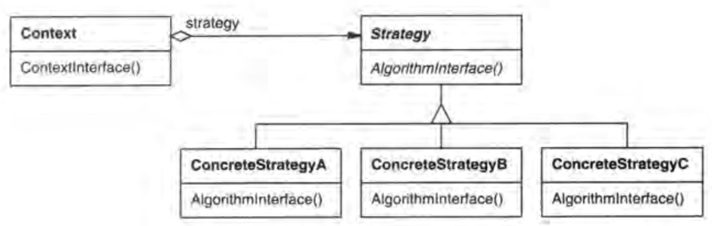
-
观察者模式：定义了对象之间的一对多依赖，当一个对象改变状态时，它的所有依赖者都会收到通知并自动更新 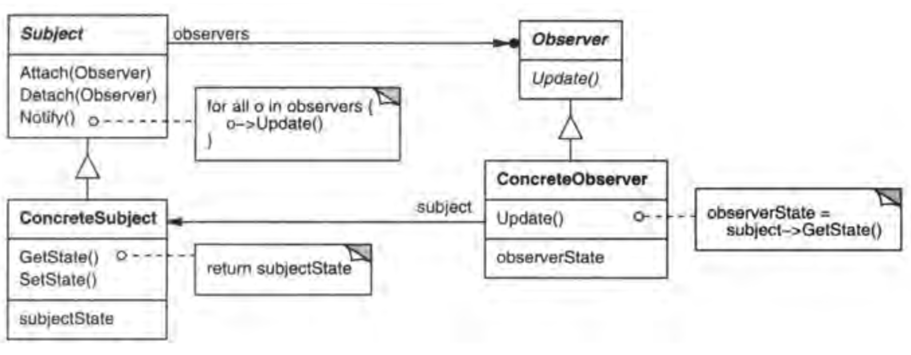
-
装饰器模式：动态地将责任附加到对象上。 若要扩展功能，装饰器提供了比继承更有弹性的替代方案。

-
工厂方法模式：定义了一个创建对象的接口，但由子类决定要实例化的类是哪一个，工厂方法让类把实例化推迟到子类。 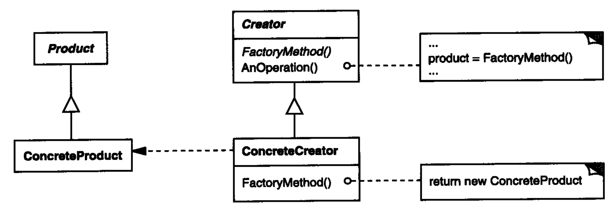
-
抽象工厂模式：提供一个接口，用于创建相关或依赖对象的家族，而不需要明确指定具体类。 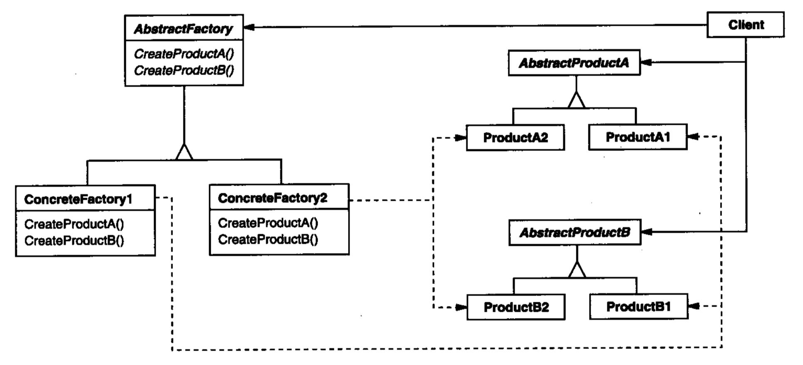
-
单例模式：确保一个类只有一个实例，并提供一个全局访问点。 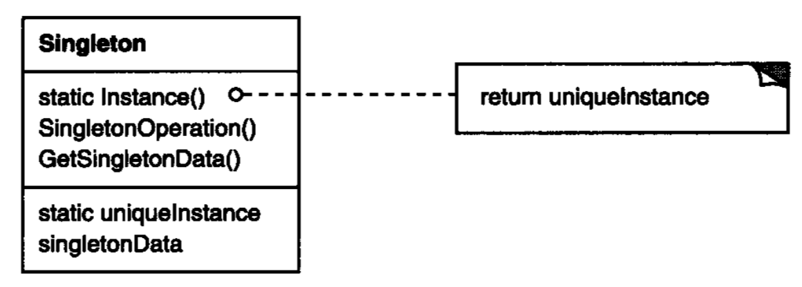
-
命令模式：将”请求“封装成对象，以便使用不同的请求，队列或者日志请求来参数化其他对象。命令模式也支持可撤销的操作。 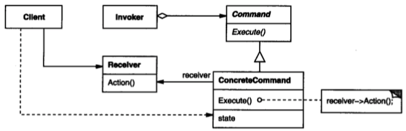
-
适配器模式：将一个类的接口，转换成客户期望的另一个接口。适配器让原本接口不兼容的类可以合作无间。 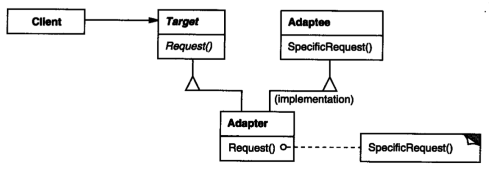 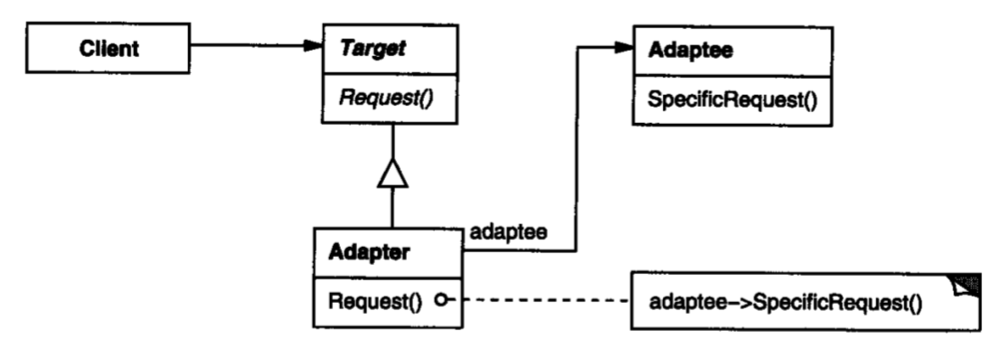
-
外观模式：提供一个统一的接口，用来访问子系统中的一群接口。外观定义了一个高层接口，让子系统更容易使用。 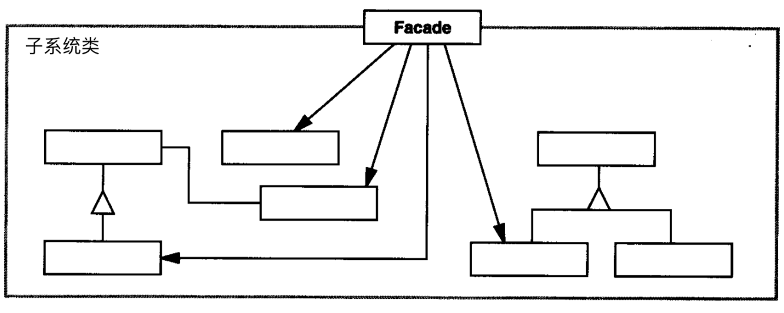
-
模板方法模式：在一个方法中定义一个算法的骨架，而将一些步骤延迟到子类中。模板方法使得子类可以在不改变算法结构的情况下，重新定义算法中的某些步骤。通过钩子方法给子类提供更灵活的功能选择。 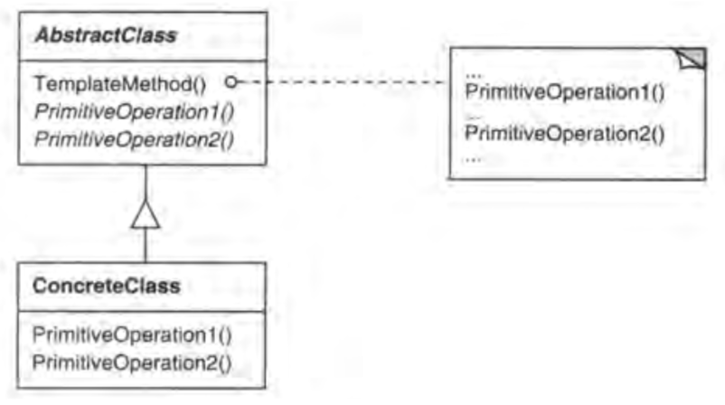
-
迭代器模式：提供一种方法顺序访问一个聚合对象中的元素，而不暴露其内部的表示。迭代器需要保存迭代的状态。 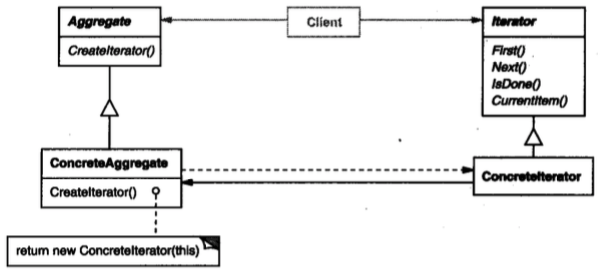
-
组合模式：允许将对象组合成树形结构来表现”整体/部分“层次结构。组合能让客户以一致的方式处理个别对象以及对象组合。组合模式牺牲了单一责任原则，所以接口的改动是隐患。

-
状态模式：允许对象在内部状态改变时改变它的行为，对象看起来好像修改了它的类。 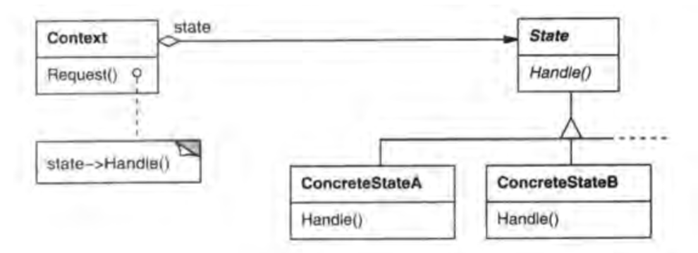
-
代理模式：为另一个对象提供一个替身或占位符以控制这个对象的访问。 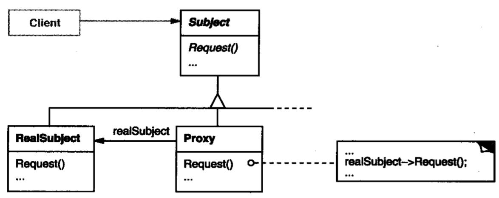
-
生成器模式：将一个复杂对象的构建与它的表示分离，使得同样的构建过程可以创建不同的表示。 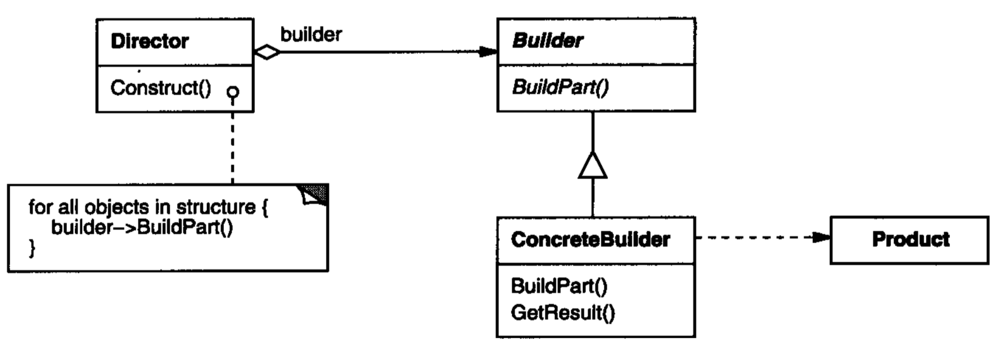
-
原型模式：用原型实例指定被创建对象的种类，并且通过拷贝这些原型创建新的对象。 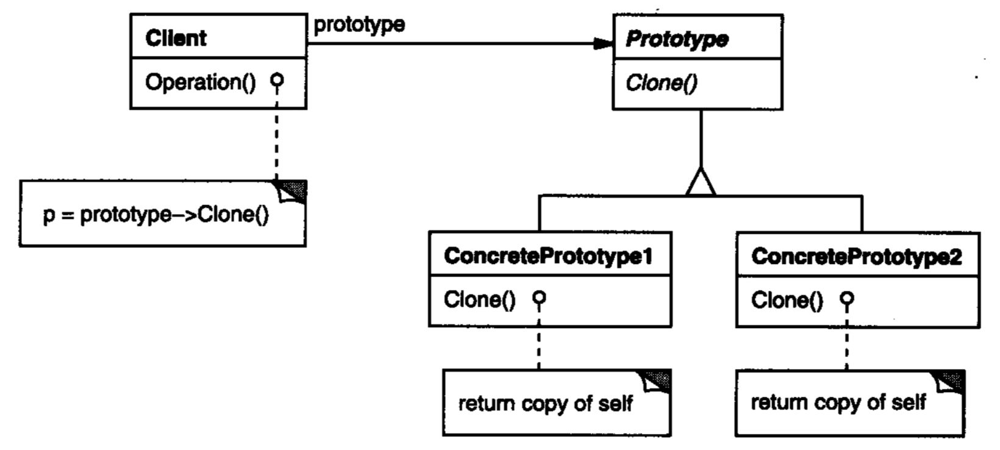
-
桥接模式：将抽象部分与它的实现部分分离，使它们都可以独立地变化。 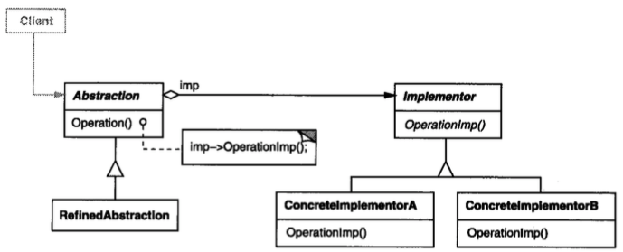
-
享元模式：运用共享技术有效地支持大量细粒度的对象。模式的有效性依赖：大量对象造成存储开销，对象大多状态可变为外部状态，删除外部状态后可用较少共享对象替代，程序不依赖于对象标识。 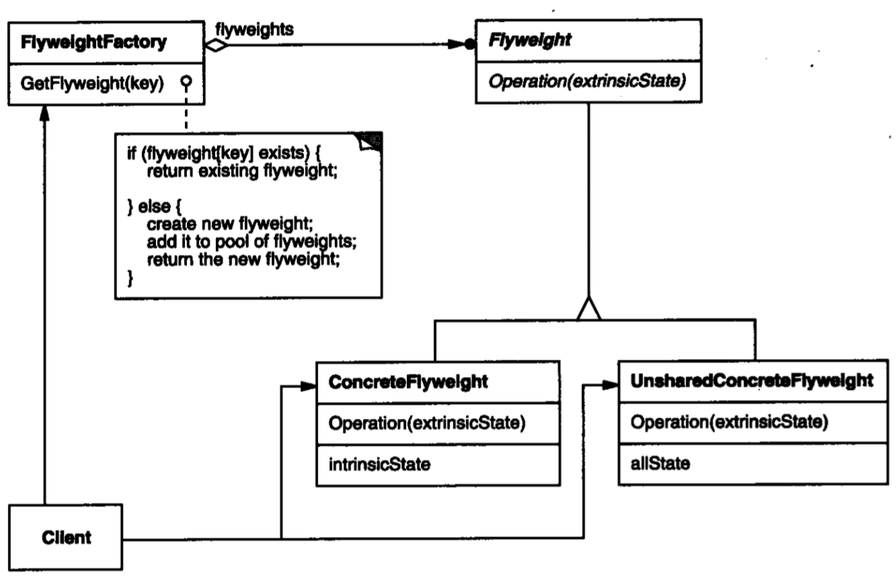
-
职责链模式：使多个对象都有机会处理请求，从而避免请求的发送者和接收者之间的耦合关系。将这些对象连成一条链，并沿着这条链传递该请求，直到有一个对象处理它为止。要点：对象链间对象没有依赖，只有一个对象处理请求。 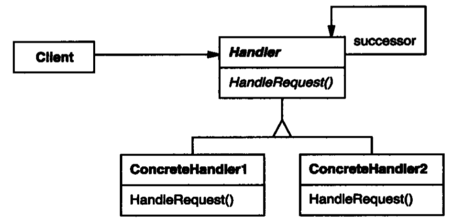
-
中介者模式：用一个中介对象来封装一系列的对象交互。中介者使各对象不需要显式地相互引用，从而使其耦合松散，而且可以独立地改变它们之间的交互。 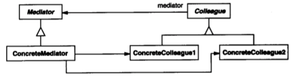
-
备忘录模式：在不破坏封装性的前提下，捕获一个对象的内部状态，并在该对象之外保存这个状态。 这样以后就可将该对象恢复到原先保存的状态。 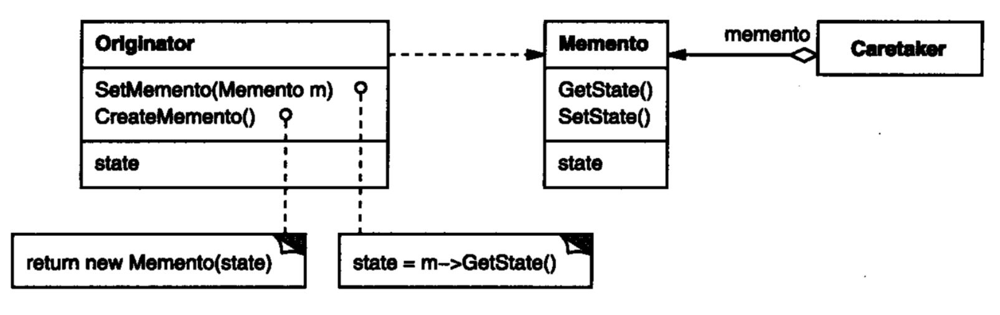
-
访问者模式：表示一个作用于某对象结构中的各元素的操作。它使你可以在不改变各元素的类的前提下定义作用于这些元素的新操作。

模式例子
策略模式
一个游戏中有国王，皇后，骑士，怪物 4 种角色，这些角色都战斗的方法，游戏中有刀，剑，斧头，弓箭 4 种武器可以使用，每个角色战斗的时候可以一种武器，并可以切换武器，以后还会增加角色和武器，设计这个游戏中的接口和类 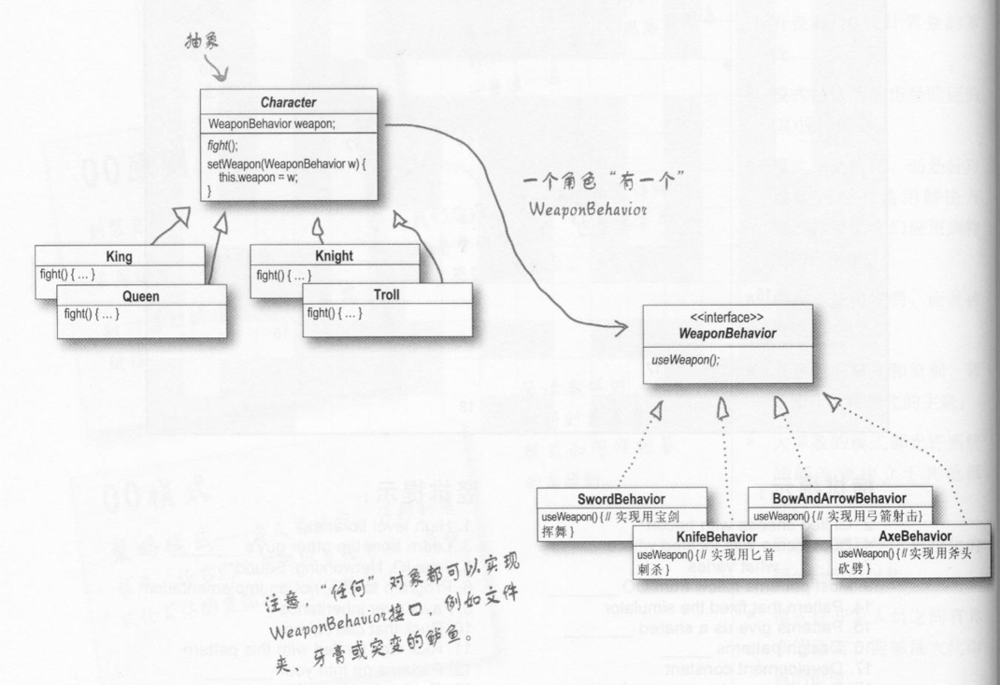
观察者模式
有个气象台一直监控温度的变化，有电子，液晶，温度计等样式的显示器，显示器都有显示温度的 display 接口和更新显示的温度的接口 update，气象台有获取温度和通知显示器温度变化的接口 measurementsChanged，希望设计以上类和接口，支持未来更多样式的显示器 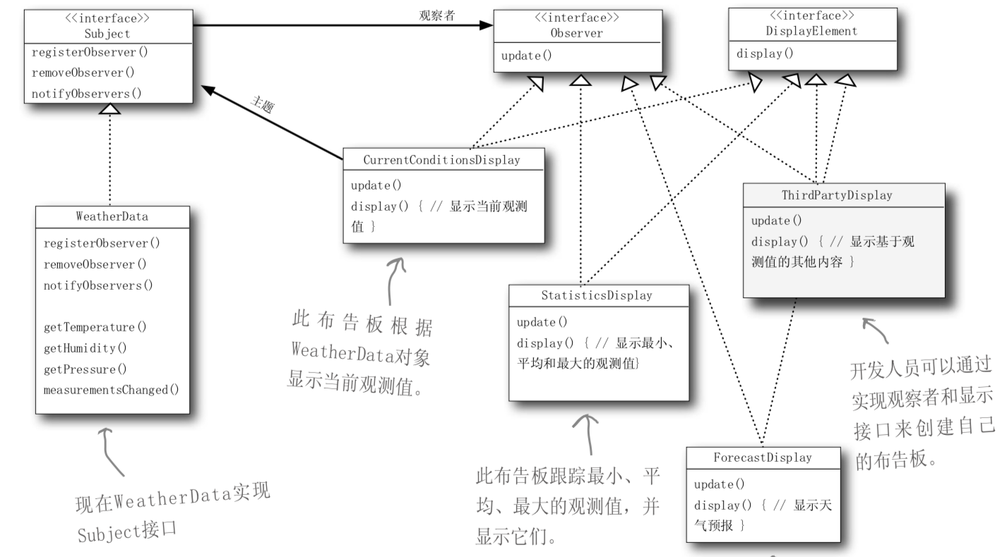
装饰器模式
Java I/O 类族 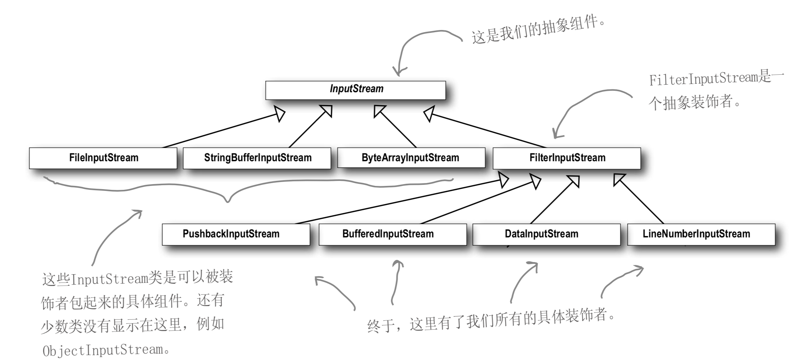
单例模式
Java 单例
// 双重检查，线程安全
public class Singleton {
private volatile static Singleton singleton;
private Singleton (){}
public static Singleton getSingleton() {
if (singleton == null) {
synchronized (Singleton.class) {
if (singleton == null) {
singleton = new Singleton();
}
}
}
return singleton;
}
}
// 静态内部类
public class Singleton {
private Singleton(){
}
public static Singleton getSingleton(){
return Inner.instance;
}
private static class Inner {
private static final Singleton instance = new Singleton();
}
}
// 枚举单例
public enum Singleton {
INSTANCE;
public void doSomething(){
//todo doSomething
}
}
python 单例
import threading
def synchronized(func):
func.__lock__ = threading.Lock()
def lock_func(*args, **kwargs):
with func.__lock__:
return func(*args, **kwargs)
return lock_func
class Singleton(object):
instance = None
@synchronized
def __new__(cls, *args, **kwargs):
"""
:type kwargs: object
"""
if cls.instance is None:
cls.instance = super().__new__(cls)
return cls.instance
命令模式
一个遥控器，有个插槽，一个开关，对应两个方法 on，off，有一个安装电器的方法 install；有一些电器，例如电灯，风扇，未来还有一些新的电器，这些电器有自己的功能方法，例如，电灯可以开和关 on，off，可以调节亮度 lightUp；怎么设计类和方法实现通过 install 方法把电器的不同功能安装到遥控器，通过遥控器的开关按钮来使用这些电器的不同功能； 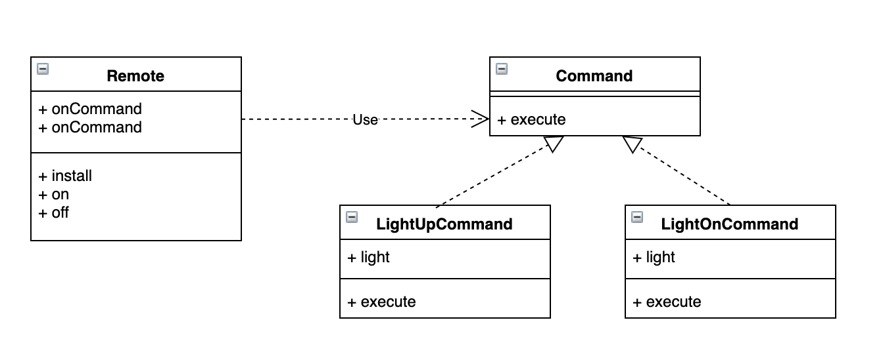
组合模式 和 迭代器模式
假如浏览器有个 debug 方法用来打印文档树，文档树由很多类型的元素组成一颗树，比如 body，header 等元素，body 元素又由很多 div 和其他元素组成，怎么设计这些类和接口，使得 debug 方法很容易就能打印出所有文档元素的内容，并且未来还会增加新类型的元素 现在想能轻松的比遍历文档树，怎么设计类和接口 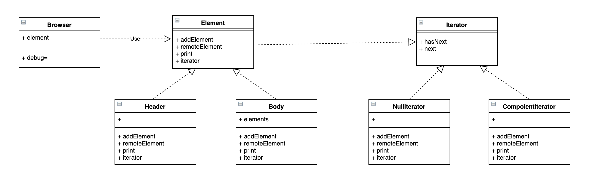
实现一个迭代器来遍历文档的元素
class NullIterator():
def has_next(self):
return False
def next(self):
return None
class ComponentIterator():
def __init__(self, element):
self.element = element
self.iter_stack = [element.iterator()]
def has_next(self):
if not self.iter_stack:
return False
iter = self.iter_stack[len(self.iter_stack) - 1]
if iter.has_next():
return True
self.iter_stack.pop()
return self.has_next()
def next(self):
if not self.has_next():
return None
iter = self.iter_stack[len(self.iter_stack) - 1]
i = iter.next()
self.iter_stack.append(i.iterator())
return i
代理模式
有个 personBean interface，有 getName, getSalary 方法，名字是公开信息，工资是敏感信息，person 类实现这个 interface，用什么设计模式来控制对 person 对象的访问，达到的效果是的信息的主人可以访问所有信息，其他人只能访问别人的名字？画出相应的类图？如何用 java 的动态代理实现？ 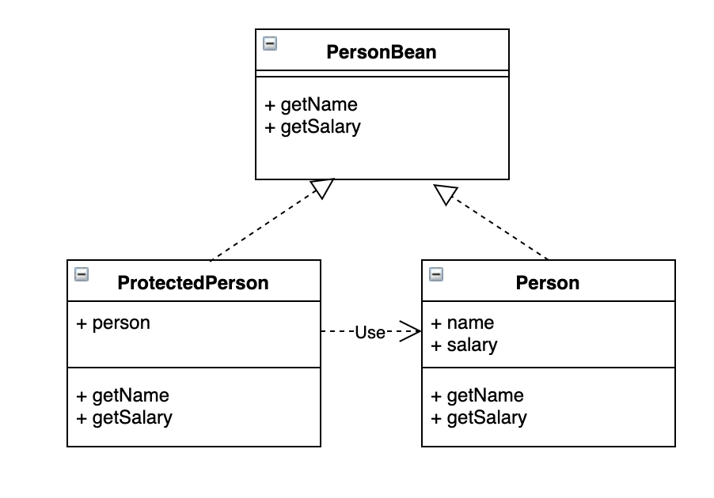
interface PersonBean {
String getName();
String getSalary();
}
class Person implements PersonBean {
private String name;
private String salary;
Person(String name, String salary) {
this.name = name;
this.salary = salary;
}
public String getName() {
return name;
}
public String getSalary() {
return salary;
}
public PersonBean proteced() {
return (PersonBean) Proxy.newProxyInstance(PersonBean.class.getClassLoader(), new Class[] {PersonBean.class}, new InvocationHandler() {
public Object invoke(Object proxy, Method method, Object[] args) throws IllegalAccessException, IllegalArgumentException, InvocationTargetException {
if (method.getName() == "getSalary") {
throw new RuntimeException("Can not get others' salary");
}
return method.invoke(Person.this, args);
}
});
}
}
参考文献
《Head FIrst 设计模式》
《设计模式 : 可复用面向对象软件的基础》